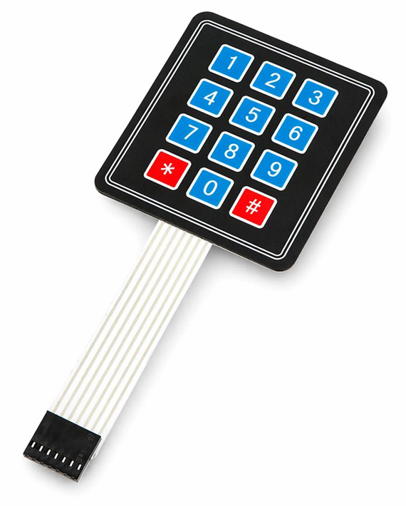
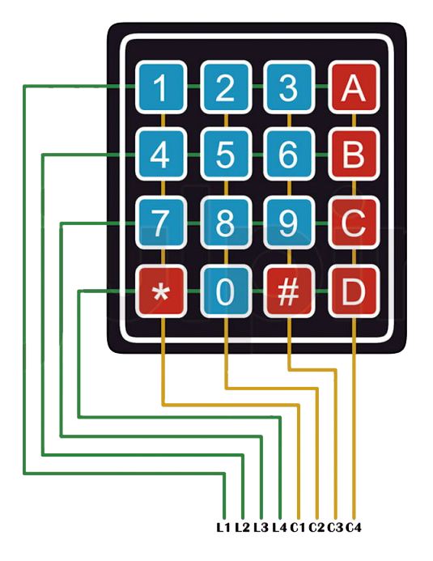
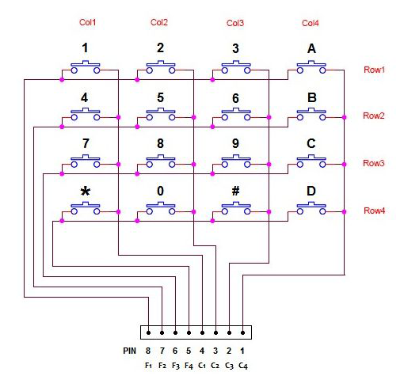
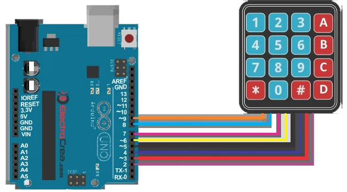

El propósito de este proyecto es diseñar y programar un temporizador digital interactivo con Arduino,
aprendiendo a gestionar entradas matriciales, tipos de datos y señales de salida visuales y sonoras.
• Comprender el funcionamiento de una matriz de botones. Aprender cómo se ahorran pines digitales
leyendo filas y columnas en lugar de conectar 16 pulsadores independientes.
• Dominar la conversión de tipos de datos. Transformar caracteres individuales (char) recibidos
del teclado en cadenas de texto (String) y, finalmente, en números enteros (int) para operar
matemáticamente con ellos.
• Controlar el flujo de un programa. Utilizar bucles condicionales (while) y temporizaciones
(delay) para ejecutar una cuenta atrás precisa.
• Generar alertas físicas. Combinar señales luminosas (LED) y acústicas (zumbador) para
comunicarse con el usuario sin necesidad de usar una pantalla.
(1) x Placa Arduino
(1) x Protoboard
(1) x Teclado matricial de membrana 4x4.
(1) x Zumbador
(1) x LED
(1) x Resistencia de 220 Ohm
(x) x M M cables (cables de macho a macho)
El teclado de membrana 4x4 está formado por tres capas de plástico flexible. La capa superior y la inferior tienen pistas conductoras impresas (filas y columnas), mientras que la capa intermedia actúa como aislante con agujeros debajo de cada tecla.

Efecto interruptor. Al presionar una tecla, las dos láminas conductoras se tocan a través del hueco de la capa
intermedia y cierran el circuito en ese cruce exacto.
Identificación de pines. Mirando el teclado de frente, los 4 primeros pines de la izquierda corresponden a las
filas (F1–F4) y los 4 de la derecha a las columnas (C1–C4).




Para no tener que programar a mano el barrido eléctrico de filas y columnas, utilizamos la librería Keypad.h.
A continuación se detallan sus funciones clave y pistas para montar tu propio código.
Antes del setup(), debes indicarle a Arduino qué carácter corresponde a cada cruce de fila y columna mediante una matriz bidimensional.
#include
const byte FILAS = 4;
const byte COLUMNAS = 4;
// 1. Mapa físico de las teclas
char teclas[FILAS][COLUMNAS] = {
{'1','2','3','A'},
{'4','5','6','B'},
{'7','8','9','C'},
{'*','0','#','D'}
};
// 2. Pines conectados en Arduino
byte pinesFilas[FILAS] = {9, 8, 7, 6};
byte pinesColumnas[COLUMNAS] = {5, 4, 3, 2};
// 3. Llamada al constructor para crear el objeto "teclado"
Keypad teclado = Keypad(makeKeymap(teclas), pinesFilas, pinesColumnas, FILAS, COLUMNAS);
makeKeymap(teclas): Traduce tu tabla de caracteres al formato interno que entiende la librería.
Keypad(...): Crea el objeto teclado configurando internamente los pines de fila como salidas y los de columna
con resistencias pull-up internas.
En la función "loop" es donde sucede toda la acción:
Dentro del bucle principal, la función más importante es getKey()
char tecla = teclado.getKey(); // Revisa si se ha pulsado alguna tecla
if (tecla != NO_KEY)
{ // Si se ha pulsado algo...
Serial.println(tecla); // ...lo muestra en pantalla
}
Vamos a dar una serie de pistas para que la programacvioón sea más sencilla.
Pista de programación 1 (Acumular cifras). La función getKey() devuelve un solo carácter (char) cada vez.
Si quieres escribir 25 segundos, crea una variable de texto String tiempoTexto = ""; y ve sumando cada dígito
pulsado con tiempoTexto += tecla;.
Pista de programación 2 (Filtrar botones). Usa estructuras if / else if para separar qué hace cada tipo de
tecla:
Si tecla >= '0' && tecla <= '9': es un número, añádelo a tu texto.
Si tecla == '*': borra el texto poniendo tiempoTexto = "";.
Si tecla == '#': convierte el texto a número con int segundos = tiempoTexto.toInt(); y arranca la cuenta
atrás.
Pista de programación 3 (La cuenta atrás). Crea un bucle while (segundos > 0) que encienda el LED durante 200 ms, lo apague durante 800 ms (sumando 1 segundo exacto) y reste uno a la variable con segundos.
Una vez que el temporizador básico funcione, intenta superar estas mejoras de nivel progresivo:
Aviso de últimos segundos (Nivel Fácil). Haz que, cuando queden menos de 5 segundos para terminar, el zumbador emita un pitido corto (tone(10, 800, 100)) en cada parpadeo del LED para avisar de que el tiempo está a punto de agotarse.
Botón de cancelación en marcha (Nivel Medio). Dentro del bucle while de la cuenta atrás, añade una lectura con
teclado.getKey().
Si el usuario pulsa la tecla 'C' mientras el tiempo está corriendo, usa la instrucción break; para abortar el
temporizador al instante.
Selector de minutos o segundos (Nivel Avanzado). Programa las teclas laterales 'A' y 'B' para elegir la unidad
de tiempo antes de pulsar '#'.
Si se pulsa 'A', el número introducido se multiplica por 60 para contar minutos; si se pulsa 'B', cuenta segundos
directamente.